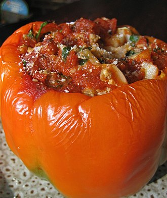

Relleno (gastronomía)
En gastronomía se llama relleno a la sustancia o mezcla comestible usada para llenar una cavidad en otro alimento. Se rellenan muchos alimentos, incluyendo carnes, verduras y frutas. No se sabe cuándo se usaron rellenos por primera vez. La evidencia documental más antigua es el libro de recetas romano De re coquinaria, obra de Apicio, que contiene recetas de pollo, liebre, cerdo y lirón rellenos. La mayoría de los rellenos descritos consisten en verduras, hierbas y especias, frutos secos y espelta, y con frecuencia contiene hígado, sesos y otras vísceras picadas, Picadillo.
Además de rellenar la cavidad corporal de diversos animales, incluyendo mamíferos, aves y peces, pueden rellenarse diversas piezas de carne tras deshuesarlas o abrir un corte en ellas. Entre las recetas populares se cuentan los muslos de pollo rellenos y pecho de ternera relleno, así como el tradicional ganso o pavo relleno navideño. También se rellenan huevos empleando diferentes recetas. Muchos tipos de verduras también son adecuados para rellenarlos después de retirarles las semillas o la pulpa. Tomates, pimientos calabacines y cebollas pueden prepararse de esta forma. Los repollos y otras verduras similares también pueden rellenarse o envolver con ellas un relleno. Suelen escaldarse primero, para hacer más flexibles sus hojas. Entonces el interior puede reemplazarse por un relleno, o bien insertarse pequeñas cantidades de relleno entre las diferentes hojas. El relleno puede cocinarse separadamente y servirse como acompañamiento. Ocasionalmente se afirma que en la Antigua Roma, así como en la Edad Media, se rellenaban animales con otros animales. Un libro de recetas anónimo andalusí del siglo III incluye una receta de un carnero relleno con pajaritos. Una receta parecida de un camello relleno con una oveja, rellena a su vez con avutardas, rellenas con carpas, a su vez rellena con huevos se menciona en el libro Water Music de T.C. Boyle. Una creación más reciente es el turducken, un pavo relleno con un pato relleno con un pollo. El famoso cocinero británico Hugh Fearnley-Whittingstall ha defendido el asado de diez pájaros, calificándolo de «uno de los asados más espectaculares y deliciosos que puedes degustar junto a tus seres queridos en la Fiesta de Yule». Un pavo grande se rellena con un ganso, un pato, un ánade real, una pintada, un pollo, un faisán, una perdiz, una paloma torcaz y una becada. El asado es para unos 30 comensales y además de los 10 pájaros incluye relleno elaborado con salchichas y panceta, aderezado con salvia, oporto y vino tinto.
El Departamento de Agricultura de los Estados Unidos (USDA) afirma que cocinar animales con las cavidades corporales rellenas puede suponer riesgos para la salud, debidos a que cuando la carne alcanza una temperatura segura, el relleno de su interior puede tener aún bacterias activas (y si la carne se cocina hasta que el relleno alcance una temperatura segura, queda demasiado hecha). Por ejemplo, para el pavo el USDA recomienda cocinar el relleno primero y no comprar animales ya rellenados (no se recomienda rellenar pavos que vayan a hacerse a la parrilla, ahumados, fritos o al microondas).
Fuente(plagio) Arriba